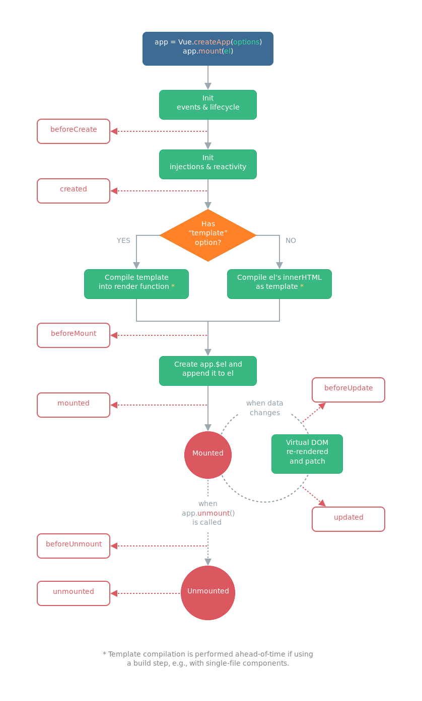

Instance & LifeCycle
안녕하세요. 성장하는 것을 즐기는 changuk이라고 합니다. 현재 fastcampus에서 frontend 개발을 공부하고 있습니다. 강의를 들으면서 해온 것들을 작성하여 지식을 공유하고 또 제가 잊었을 때 다시 와서 볼 수 있도록 내용들을 정리하려고 합니다.
이번시간부터는 VueJS의 Instance, LifeCycle에 대해 구체적으로 알아보겠습니다.
어플리케이션 & 컴포넌트 인스턴스
어플리케이션 & 컴포넌트 인스턴스를 참조하시면 되겠습니다.
모든 Vue 어플리케이션은 createApp 함수를 사용하여 새로운 어플리케이션 인스턴스를 생성하여 시작합니다. 아래 코드로 설명하겠습니다.
const app = Vue.createApp({
/* options */
})
위의 코드에서 새로운 어플리케이션 인스턴스가 생성이 되는데, 그 인스턴스를 상수 app에 할당하여 시작할 수 있다는 의미입니다. 그 후에 우리는 app에 mount 메소드를 입력할 수 있겠고, 만약 html에 <div id="app">으로 선언되어 있다면 #app을 mount에 전달하면 됩니다.
그리고 어플리케이션 인스턴스에 의해 노출된 대부분의 메소드들은 동일한 인스턴스를 반환하여 연결(Chaining)을 허용합니다.
Vue.createApp({})
.component('SearchInput', SearchInputComponent)
.directive('focus', FocusDirective)
.use(LocalePlugin)
최상위(Root) 컴포넌트
최상위(Root) 컴포넌트에 대한 내용도 설명하겠습니다. createApp에 전달된 옵션은 루트 컴포넌트를 구성하는데 사용됩니다. 이 컴포넌트는 한 프로젝트를 시작할 때, 렌더링의 시작점으로 사용됩니다. 최상위 컴포넌트는 이전 포스트에서 만들었던 App.vue라고 이해하시면 되겠습니다.
우리는 App.vue를 시작하는 컴포넌트로서 사용하고, 이 컴포넌트에 여러가지 새로운 컴포넌트들을 추가적으로 연결해서 사용할 수 있습니다.
예를 들어, App.vue를 <div id="app"></div>에 mount하려면 #app을 전달해야 합니다.
const RootComponent = {
/* options */
}
const app = Vue.createApp(RootComponent)
const vm = app.mount('#app')
컴포넌트 인스턴스 속성들
다른 VueJS파일에서 특정 VueJS파일의 데이터를 확인하려면 어떻게 할 수 있을까요? 아래 예시에서 그것을 간략하게 구현한 내용을 확인해보겠습니다. 나중에 필요할 때가 있다면 사용할 수 있을 것입니다.
const app = Vue.createApp({
data() {
return { count: 4 }
},
})
const vm = app.mount('#app')
console.log(vm.count) // => 4
라이프사이클 훅
각 컴포넌트는 생성될 때 일련의 초기화 단계를 거칩니다. 예를 들어,
- 정의한 데이터의 관찰,
- <template>옵션의 여러가지 내용들을 변환하는 과정(Template Compile),
- 그 내용들을 실제 HTML에 연결하는 과정(DOM Mount),
- 데이터 변경
이 발생할 때에 화면을 갱신(Reactiviy, 반응성)해주어야 합니다. 이 과정에서 라이프사이클 훅이라 불리는 함수도 실행하여, 사용자가 특정 단계에서 자신의 코드를 추가할 수 있는 기회를 제공합니다.
예를 들어, created 훅은 인스턴스가 생성된 후에 코드를 실행하는데에 사용됩니다.
Vue.createApp({
data() {
return { count: 1 }
},
created() {
// `this` points to the vm instance
console.log('count is: ' + this.count) // => "count is: 1"
},
})
data() 메서드에 count라는 데이터가 1로 초기화되어 있습니다. 그 밑에 created()라는 라이프사이클 훅이 하나 작성되어 있고 이것은 함수입니다. 이 함수가 바로 인스턴스가 생성된 직후에 실행된다는 의미죠.
이 함수가 실행될 때, count라는 데이터의 값을 읽을 수 있게 됩니다. 또
인스턴스 라이프사이클에는 mounted, updated, unmounted 과 같은 다른 훅도 존재합니다.
라이프사이클 다이어그램
아래는 인스턴스 라이프사이클에 대한 다이어그램입니다. 지금 당장 모든 것을 완전히 이해할 필요는 없지만 다이어그램은 앞으로 도움이 될 것입니다.

위에서부터 하나씩 내용을 살펴보도록 하겠습니다. 일단 Vue.createApp()을 통해서 프로젝트를 시작합니다. 그리고 mount()를 통해 HTML구조에 연결하게 됩니다. 그 후 기본적인 VueJS 프로젝트의 여러가지 Event, Lifecycle들이 초기화됩니다. 이 과정이 끝나면 beforeCreate 라이프사이클 훅이 실행됩니다.
만약 우리가 초기화 직후에 어떤 내용을 실행해야 한다면 이렇게 beforeCreate라는 라이프사이클 훅에서 실행하면 된다는 의미입니다.
그 과정이 끝나면, 기본적인 injections & reactivity가 초기화됩니다. 이 과정에서는 우리가 만든 데이터들이나 기본적인 반응성이 만들어지는 과정이라고 이해하시면 됩니다. 이 과정이 끝나면, created 라이프사이클 훅이 실행됩니다.
예를 들어, VueJS에서 count라는 데이터를 만들었다고 생각해봅시다. 이 count는 숫자 4가 입력되어 있는데 이 값은 beforeCreate 라이프사이클 훅에서는 읽을 수가 없습니다. count는 그 다음 부분에서 초기화되기 때문이지요. 즉, count의 데이터 4를 확인하려면, created 라이프사이클 훅을 사용하여야만 가능하다는 의미입니다.
더 아래로 내려가보면 주황색 박스로 분기처리가 되어있는걸 확인할 수 있습니다. 우리가 VueJS의 옵션으로 template이라는 옵션을 사용하게 되면, YES, 그렇지 않으면 NO로 가게 됩니다. 그 후에 기본적인 Compile Template과정을 거치게 됩니다. 이러한 처리과정을 거치면, 실제 HTML의 구조에 연결이 되어 화면에 출력됩니다.
이렇게 연결되기 직전에, beforeMount 라이프사이클 훅이 동작하게 됩니다.
연결된 직후에는 mounted 라이프사이클 훅이 실행됩니다. 이렇게 연결된 상태에서도 라이프사이클 훅이 동작할 수 있습니다. 데이터가 변경되자마자, beforeUpdate 라이프사이클 훅이 동작하고 직후에 Virtual DOM이라는 가상 DOM을 통해 현재 화면에 나타나있는 내용과 실제로 데이터가 변경되어 화면에 나타나게 될 내용을 비교분석하는 과정이 동작하게 됩니다.
이것이 앞서 말씀드린 반응성과 밀접하게 관련되어있는 내용이라고 말씀드릴 수 있습니다. 이와 같이 변경된 내용을 re-rendered라는 개념으로 다시 나타내주게 됩니다. 화면에 변경된 내용이 다시 나타내게 되면, 그것이 updated 라이프사이클 훅에서 실행이 됩니다.
마지막으로,
app에서 unmount() 메소드를 실행하게 되면 VueJS로 작성한 Component의 연결이 끊어지게 됩니다. 그러면 실제로 완벽하게 끊어지기 전에, beforeUnmount 라이프사이클 훅이 실행이 되고 완벽하게 끊어지고 나서 unmounted 라이프사이클 훅이 실행됩니다.
굳이 라이프사이클 훅의 경중을 따지자면 아래와 같습니다.
- created 라이프사이클 훅
- mounted 라이프사이클 훅
아래 코드를 보며 이해를 향상시키면 좋겠습니다.
<template>
<h1>8</h1>
</template>
<script>
export default {
data() {
return {
count: 2,
}
},
beforeCreate() {
console.log('Before Create!', this.count) // Before Create! undefined
},
created() {
console.log('Created!', this.count) // Created! 2
console.log(document.querySelector('h1')) // null. HTML구조와 연결되기 전 상태이기 때문에 검색 불가능
},
beforeMount() {
console.log('Before Mount!') // Before Mount!
console.log(document.querySelector('h1')) // null. HTML구조와 연결되기 전 상태이기 때문에 검색 불가능
},
mounted() {
console.log('Mounted!') // Mounted!
console.log(document.querySelector('h1'))
/* <h1>2</h1> */
},
}
</script>